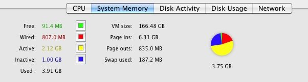

La gestión de memoria de OS X asigna memoria automáticamente y ajusta sus contenidos según la situación. Los tipos de memoria del sistema son: Libre, Física, Activa e Inactiva.
La suma de estos cuatro tipos es el total de memoria de acceso aleatorio (RAM) instalada en el Mac. La RAM es la memoria de alta velocidad que se utiliza para almacenar la información que se está utilizando o que se ha utilizado más recientemente. La información se carga en la RAM desde el disco duro del Mac durante el arranque y al abrir aplicaciones y documentos.
La siguiente imagen es un ejemplo del estado de la memoria del sistema, vista desde el monitor de actividad, que muestra los diferentes tipos de memoria:

Cada elemento de la imagen, tienen una función diferente:
Memoria Libre: Es la cantidad de memoria RAM que no se está utilizando.
Memoria Física: Información en la memoria RAM que no puede moverse al disco duro del Mac. Depende de las aplicaciones que estés usando.
Memoria Activa: Información que se encuentra actualmente en la RAM y se ha utilizado recientemente.
Memoria Inactiva: Información se encuentra en la memoria RAM, pero no está utilizándose de forma activa, aunque sí se ha utilizado recientemente. Por ejemplo, si has estado utilizando una aplicación y la cierras, la RAM que utilizaba la aplicación pasará a ser memoria Inactiva, que está disponible para cualquier otra aplicación, como la memoria Libre. No obstante, si vuelves a abrirla antes de que otra aplicación utilice la memoria Inactiva, se abrirá más rápido, ya que la memoria Inactiva se convertirá en memoria Activa, en vez de tener que cargar la aplicación desde el disco duro, que es más lento.
Memoria en uso: La cantidad total de memoria RAM en uso.
Tamaño memoria virtual: Es la cantidad de memoria virtual para todos los procesos de tu Mac.
Paginación (entradas) / Paginación (salidas): Hace referencia a la cantidad de información que se mueve entre la RAM y el disco duro del Mac. Este número representa la cantidad de datos acumulados que OS X ha movido entre la RAM y el disco duro del Mac. El número que aparece entre paréntesis muestra la actividad de paginación reciente. Las salidas de paginación se producen cuando el Mac tiene que escribir información de la RAM en el disco duro porque la RAM ya está llena. Añadir más RAM puede reducir las salidas de paginación.
Espacio de intercambio usado: Es la cantidad de información que se ha copiado al archivo de intercambio del disco duro del Mac.